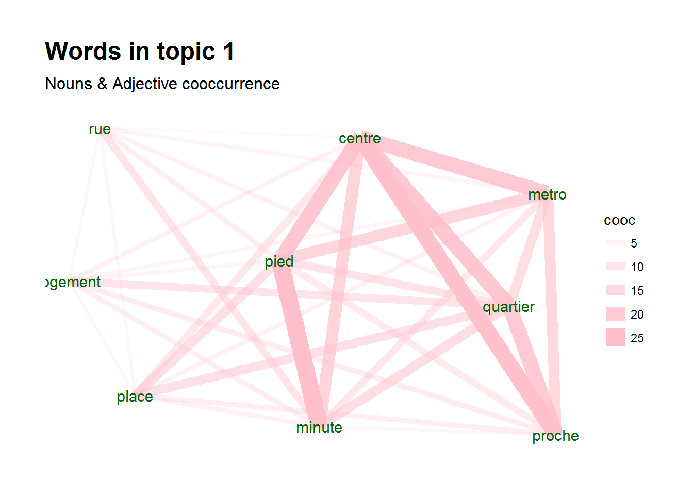

Basic Analytical Use Cases II
UDPipe for Topic Modelling
In order to get the most out of the package, we will show how to use the outcome of the annotation to improve topic modelling. The main use cases of using the outcome of the annotation is to
- build topic models only on specific parts of speech tags
- build topic models on compound keyword instead of just unigrams
- allow to easily summarise topics
Let's show this.
Start with annotating
Let's start by annotating some text in French. The annotated data.frame can next be used for basic text analytics.
library(udpipe)
data(brussels_reviews)
comments <- subset(brussels_reviews, language %in% "fr")
ud_model <- udpipe_download_model(language = "french")
ud_model <- udpipe_load_model(ud_model$file_model)
x <- udpipe_annotate(ud_model, x = comments$feedback, doc_id = comments$id)
x <- as.data.frame(x)
The resulting data.frame has a field called upos which is the Universal Parts of Speech tag and also a field called lemma which is the root form of each token in the text. These 2 fields give us a broad range of topic modelling possibilities.
str(x)
'data.frame': 30109 obs. of 14 variables:
$ doc_id : chr "47860059" "47860059" "47860059" "47860059" ...
$ paragraph_id : int 1 1 1 1 1 1 1 1 1 1 ...
$ sentence_id : int 1 1 1 1 1 1 1 1 1 1 ...
$ sentence : chr "Quelle excellent week end - Merci a David pour sa confiance, merci a son appart d etre aussi chouette, merci au quartier d etre"| __truncated__ "Quelle excellent week end - Merci a David pour sa confiance, merci a son appart d etre aussi chouette, merci au quartier d etre"| __truncated__ "Quelle excellent week end - Merci a David pour sa confiance, merci a son appart d etre aussi chouette, merci au quartier d etre"| __truncated__ "Quelle excellent week end - Merci a David pour sa confiance, merci a son appart d etre aussi chouette, merci au quartier d etre"| __truncated__ ...
$ token_id : chr "1" "2" "3" "4" ...
$ token : chr "Quelle" "excellent" "week" "end" ...
$ lemma : chr "quel" "excellent" "weekend" "end" ...
$ upos : chr "DET" "ADJ" "NOUN" "NOUN" ...
$ xpos : chr NA NA NA NA ...
$ feats : chr "Gender=Fem|Number=Sing" "Gender=Masc|Number=Sing" "Gender=Masc|Number=Sing" "Gender=Fem|Number=Sing" ...
$ head_token_id: chr "3" "3" "7" "3" ...
$ dep_rel : chr "det" "amod" "nsubj" "appos" ...
$ deps : chr NA NA NA NA ...
$ misc : chr NA NA NA NA ...
Basic topic modelling
You can easily go from this annotated data.frame to a document-term-matrix which is used by a lot of other text mining R packages. In this case, we will build topics at the sentence level.
The advantage of this package over other packages is that
- topic modelling can be done directly on the right terms as these can be easily identified with the Parts of Speech tag: mostly you are only interested in nouns and verbs or only in finding topics adjectives if you are interested in sentiment clustering.
- so you don't have to build a long list of stopwords any more
- and moreover you can work based on the lemma instead of the plain token, making the words resemble more each other
- you can easily include compound keywords (see later in this vignette)
Topic modelling only on specific POS tags
Below we fit a topic model on the nouns only.
## Define the identifier at which we will build a topic model
x$topic_level_id <- unique_identifier(x, fields = c("doc_id", "paragraph_id", "sentence_id"))
## Get a data.frame with 1 row per id/lemma
dtf <- subset(x, upos %in% c("NOUN"))
dtf <- document_term_frequencies(dtf, document = "topic_level_id", term = "lemma")
head(dtf)
doc_id term freq
1: 1882 weekend 1
2: 1882 end 1
3: 1882 confiance 1
4: 1882 merci 2
5: 1882 appart 1
6: 1882 quartier 2
## Create a document/term/matrix for building a topic model
dtm <- document_term_matrix(x = dtf)
## Remove words which do not occur that much
dtm_clean <- dtm_remove_lowfreq(dtm, minfreq = 5)
head(dtm_colsums(dtm_clean))
15min acce accueil adresse agence airbnb
5 12 134 40 5 6
## Remove nouns which you really do not like (mostly too common nouns)
dtm_clean <- dtm_remove_terms(dtm_clean, terms = c("appartement", "appart", "eter"))
## Or keep of these nouns the top 50 based on mean term-frequency-inverse document frequency
dtm_clean <- dtm_remove_tfidf(dtm_clean, top = 50)
Once we have our document/term/matrix, topic modelling is simple
library(topicmodels)
m <- LDA(dtm_clean, k = 4, method = "Gibbs",
control = list(nstart = 5, burnin = 2000, best = TRUE, seed = 1:5))
Predict new documents
Furthermore, we can also easily use the model to predict to which topic a new document belongs to. And the predict function will give correctly NA values for documents for which we don't have terms which are used in the model which is a pain in other R packages. It also allows to provide labels to each topic and gives the difference in topic probability to the next best topic which is usefull to see how clear-cut your topics are.
scores <- predict(m, newdata = dtm, type = "topics",
labels = c("labela", "labelb", "labelc", "xyz"))
str(scores)
'data.frame': 1767 obs. of 9 variables:
$ doc_id : chr "1" "10" "100" "1000" ...
$ topic : int NA NA NA 3 NA 4 2 4 NA NA ...
$ topic_label : chr NA NA NA "labelc" ...
$ topic_prob : num NA NA NA 0.265 NA ...
$ topic_probdiff_2nd: num NA NA NA 0.0196 NA ...
$ topic_labela : num NA NA NA 0.245 NA ...
$ topic_labelb : num NA NA NA 0.245 NA ...
$ topic_labelc : num NA NA NA 0.265 NA ...
$ topic_xyz : num NA NA NA 0.245 NA ...
Interpret topics
To interpret the topic model and to give appropriate labels, you can get the most emitted terms for each topic with a minimal term emittance probability and the minimum number of terms to show. It is also usefull to look at the textrank package (https://CRAN.R-project.org/package=textrank) which allows to summarise text and can be used to find the most relevant sentences within each topic.
predict(m, type = "terms", min_posterior = 0.05, min_terms = 3)
$topic_001
term prob
1 probleme 0.14504505
2 goût 0.13603604
3 moment 0.11801802
4 merci 0.10900901
5 proprietaire 0.10900901
6 chance 0.06396396
$topic_002
term prob
1 experience 0.19090909
2 semaine 0.09173554
3 voyage 0.09173554
4 plaisir 0.06694215
5 Hote 0.05867769
6 pratique 0.05867769
7 soin 0.05867769
8 escalier 0.05041322
$topic_003
term prob
1 plaisir 0.18828125
2 week-end 0.15703125
3 endroit 0.10234375
4 point 0.07109375
5 occasion 0.06328125
6 goût 0.05546875
$topic_004
term prob
1 emplacement 0.12242991
2 annonce 0.07570093
3 dejeuner 0.07570093
4 parking 0.07570093
5 couchage 0.05700935
6 envie 0.05700935
7 equipement 0.05700935
Doing the same on the adjectives + nouns
If you want to do the same on adjectives + nouns, just change the above code where it says upos %in% c("NOUN") in upos %in% c("NOUN", "ADJ") and you are ready.
## Build document term matrix on nouns/adjectives only
dtf <- subset(x, upos %in% c("NOUN", "ADJ") &
!lemma %in% c("appartement", "appart", "eter", "tres"))
dtf <- document_term_frequencies(dtf, document = "topic_level_id", term = "lemma")
dtm <- document_term_matrix(x = dtf)
dtm_clean <- dtm_remove_lowfreq(dtm, minfreq = 5)
## Build topic model + get topic terminology
m <- LDA(dtm_clean, k = 4, method = "Gibbs",
control = list(nstart = 5, burnin = 2000, best = TRUE, seed = 1:5))
topicterminology <- predict(m, type = "terms", min_posterior = 0.025, min_terms = 5)
scores <- predict(m, newdata = dtm, type = "topics")
Topic visualisation
Once you have topics, visualising these can also be easily done with the igraph and ggraph packages. Below one possible plot is shown. It shows for a certain topic the co-occurrence of terms
library(igraph)
library(ggraph)
library(ggplot2)
x_topics <- merge(x, scores, by.x="topic_level_id", by.y="doc_id")
wordnetwork <- subset(x_topics, topic %in% 1 & lemma %in% topicterminology[[1]]$term)
wordnetwork <- cooccurrence(wordnetwork, group = c("topic_level_id"), term = "lemma")
wordnetwork <- graph_from_data_frame(wordnetwork)
ggraph(wordnetwork, layout = "fr") +
geom_edge_link(aes(width = cooc, edge_alpha = cooc), edge_colour = "pink") +
geom_node_text(aes(label = name), col = "darkgreen", size = 4) +
theme_graph(base_family = "Arial Narrow") +
labs(title = "Words in topic 1 ", subtitle = "Nouns & Adjective cooccurrence")

Another possibility is showing correlations among the terms driving the topic for only documents of that topic.
topicterminology <- predict(m, type = "terms", min_posterior = 0.05, min_terms = 10)
termcorrs <- subset(x_topics, topic %in% 1 & lemma %in% topicterminology[[1]]$term)
termcorrs <- document_term_frequencies(termcorrs, document = "topic_level_id", term = "lemma")
termcorrs <- document_term_matrix(termcorrs)
termcorrs <- dtm_cor(termcorrs)
termcorrs[lower.tri(termcorrs)] <- NA
diag(termcorrs) <- NA
library(qgraph)
qgraph(termcorrs, layout = "spring", labels = colnames(termcorrs), directed = FALSE,
borders = FALSE, label.scale = FALSE, label.cex = 1, node.width = 0.5)

Include keywords in topic models
You mostly get better, more interpretable results in topic models if you include compound keywords in the model. Let's show the steps how you can accomplish this.
- First get keywords using either the
keywords_rake,keywords_phrases,keywords_collocationfunctions or with functionality from the textrank R package. - Use function
txt_recode_ngramto recode words to keywords. This will replace a sequence of words with its compound multi-word expression by first starting with words which contain more terms. - Build the document-term-matrix to build a topic model
In the below example, we are building a topic model on all nouns, all compound keywords which consists of nouns and adjectives and on all identified noun phrases.
## Find keywords with RAKE
keyw_rake <- keywords_rake(x,
term = "token", group = c("doc_id", "paragraph_id", "sentence_id"),
relevant = x$upos %in% c("NOUN", "ADJ"),
ngram_max = 3, n_min = 5)
## Find simple noun phrases
x$phrase_tag <- as_phrasemachine(x$upos, type = "upos")
keyw_nounphrases <- keywords_phrases(x$phrase_tag, term = x$token,
pattern = "(A|N)*N(P+D*(A|N)*N)*", is_regex = TRUE,
detailed = FALSE)
keyw_nounphrases <- subset(keyw_nounphrases, ngram > 1)
## Recode terms to keywords
x$term <- x$token
x$term <- txt_recode_ngram(x$term,
compound = keyw_rake$keyword, ngram = keyw_rake$ngram)
x$term <- txt_recode_ngram(x$term,
compound = keyw_nounphrases$keyword, ngram = keyw_nounphrases$ngram)
## Keep keyword or just plain nouns
x$term <- ifelse(x$upos %in% "NOUN", x$term,
ifelse(x$term %in% c(keyw_rake$keyword, keyw_nounphrases$keyword), x$term, NA))
## Build document/term/matrix
dtm <- document_term_frequencies(x, document = "topic_level_id", term = "term")
dtm <- document_term_matrix(x = dtm)
dtm <- dtm_remove_lowfreq(dtm, minfreq = 5)
Once we have our document/term/matrix, topic modelling is simple. Keep in mind that you need to tune your topic model, which is not done below. See the topicmodels and ldatuning R package which show you how to do that.
m <- LDA(dtm, k = 3, method = "Gibbs",
control = list(nstart = 5, burnin = 2000, best = TRUE, seed = 1:5))
You'll see that the topic model now includes keywords
topicterminology <- predict(m, type = "terms", min_posterior = 0.10, min_terms = 3)
topicterminology
$topic_001
term prob
1 ete tres 0.22057707
2 tres bon 0.10668185
3 il nous 0.05353075
$topic_002
term prob
1 centre ville 0.11049927
2 Accueil 0.07011747
3 que nous 0.06644640
$topic_003
term prob
1 tres agreable 0.22404153
2 tres sympa 0.09624601
3 bon sejour 0.06429712
Other option to build document term matricis
In the above exercise, nouns which were part of a compound multi-word-expression (mwe) were replaced by the multi-word-expression. Sometimes however, you want to keep the noun as well as the multi-word expression in the topic model even if the noun is always part of a multi-word expression. You can do this as follows.
## Recode tokens to keywords, if it is not in the list of tokens, set to NA
x$mwe <- txt_recode_ngram(x$token, compound = keyw_rake$keyword, ngram = keyw_rake$ngram)
x$mwe <- ifelse(x$mwe %in% keyw_rake$keyword, x$mwe, NA)
## nouns
x$term_noun <- ifelse(x$upos %in% "NOUN", x$token, NA)
## Build document/term/matrix
dtm <- document_term_frequencies(x, document = "topic_level_id", term = c("term_noun", "mwe"))
dtm <- document_term_matrix(x = dtm)
dtm <- dtm_remove_lowfreq(dtm, minfreq = 3)
m <- LDA(dtm, k = 3, method = "Gibbs",
control = list(nstart = 5, burnin = 2000, best = TRUE, seed = 1:5))
Summarising topics
The textrank R package allows you to easily summarise text, it integrates well with this udpipe R package. It's especially suited for finding a the most relevant sentences of documents of a certain (LDA) topic. More details on that package, see https://CRAN.R-project.org/package=textrank.
Support in text mining
Need support in text mining. Contact BNOSAC: http://www.bnosac.be